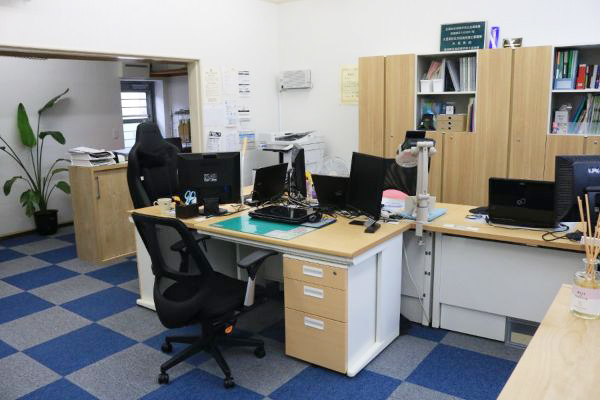

About
おあしす総合会計事務所について
事業所概要overview
| 事務所名 | 大見厚誌税理士事務所 |
|---|---|
| 屋号 | おあしす総合会計事務所 |
| 代表者 | 大見 厚誌（おおみ あつし） |
| 所在地 | 〒446-0063 愛知県安城市昭和町19-37 昭和ビル1階B |
| 電話番号 | 0566-72-7789 |
| FAX番号 | 0566-93-9386 |
| a-omi@oasis-kaikei.com | |
| 経営理念 | 中小企業の発展、円満で円滑な相続に全力を尽くす！ |
- 

JR東海道線 安城駅北口より徒歩5分
駐車場は事務所前面スペースをご利用ください。
税理士の紹介Introduction of tax accountant
税理士 大見 厚誌（おおみ あつし）
| 昭和58年7月29日生まれ | |
|---|---|
| 2006年 | 南山大学経営学部経営学科卒業 |
| 2006年 | 岡崎信用金庫入社（預金事務・融資事務・渉外） 融資事務を経験後、預金・融資をはじめとした金融営業に従事しておりました。融資審査の際の金融機関の考え方や、資金調達のコツについて熟知しております。 |
| 2012年 | 大板会計事務所入社（一般の中小法人や医療機関に特化） 経営計画の策定や資金繰りアドバイスなどの業務に従事しておりました。また、医療機関にも特化した事務所でもあったため、医療の税務にも精通しております。 |
| 2016年 | 木村会計事務所入社（不動産オーナーや相続税申告に特化） 不動産や株式などの譲渡や贈与といった案件も多く経験して参りました。また、相続税申告についても豊富な経験に基づいた、円滑で円満な相続税申告をお手伝いします。 |
| 2018年 | 独立。おあしす総合会計事務所設立。 |
経験に基づく強み
岡崎信用金庫時代では、融資事務や預金・融資をはじめとした金融営業に従事しておりました。そこでは、多くのお客様の決算書を見て融資提案を行ってきました。金融機関の考え方や、資金調達のコツについて熟知しております。また、住宅ローンや保険商品、投資信託についても精通しております。
その後の会計事務所勤務で、一般の中小法人のお客様には、通常の税務会計のみならず、経営計画の策定や資金繰りアドバイスなどの業務にも従事しておりました。また、医療機関にも特化した事務所でもあったため、特殊と言われる医療の税務にも精通しております。
不動産オーナーについては、通常の確定申告のみならず、不動産や株式などの譲渡や贈与といった案件も多く経験して参りました。また、相続税申告についても専門とした事務所であったため、相続が起こる前に取るべき対策、起こってからの対策についてもお手伝いさせて頂きます。
当事務所の特徴Feature
金融機関出身の税理士です。融資対策や事業計画の事はお任せ下さい。
「現在の税理士さんは融資の相談にきちんと乗ってくれますか？」
税理士の中には、融資の相談が得意でない方もいらっしゃいます。代表税理士である大見は、信用金庫に勤めていた経験から、融資をする側（＝金融機関）の考え方を熟知しています。どうしたら希望額を少しでも低い金利で借りられるのか、そのために金融機関の担当者には何を話すべきか、資料として何を渡すべきかなど、融資営業をしていた経験からしっかりとお手伝いさせて頂きます。
融資を知っている税理士に、ぜひご相談下さい。

資産税（相続・贈与・譲渡）に関するお悩みや申告について誠実に対応致します。
「相続税、心配しなくて大丈夫ですか？」
平成26年までは約96％の方が「大丈夫」と答えていたでしょう。それまでは100人に4人しか相続税はかかりませんでした。しかし現在はその倍の方が対象となり、今や相続税は資産家だけの問題ではなくなっています。
相続税はお亡くなりになってから10ヵ月以内に相続人が申告・納税をする必要があります。時間にあまり余裕はありません。だからこそ迅速・丁寧・誠実に申告のお手伝いをさせて頂きます。
相続に強い税理士に、ぜひご相談下さい。

フェイス・トゥー・フェイスを信念に、税理士が直接素早く対応致します。
「社長さん、所長税理士と最近会っていますか？」
税理士事務所の多くは、規模が大きくなるに従って従業員が増え、顧客対応も所長税理士から従業員に代わります。以前は何度も顔を合わせていた税理士とも直接会う回数が減り、ついには何年も会ってない、なんて事もあるでしょう。担当である従業員が退職した場合、別の担当者が付きその都度やり方を説明する、と言った事もあります。
当事務所はフェイス・トゥー・フェイスを信念として、税理士が対応致します。お客様の事を一番に考えて行動するためには、お客様と税理士自身が直接会って対話を重ねる事が重要であると考えるからです。
顔の見える税理士に、ぜひご相談下さい。

他士業（弁護士・司法書士・行政書士等）と連携し、事業活動をトータルサポート致します。
「その都度専門家を探していませんか？」
会社を設立したい、役員を変更する必要がある、ちょっと面倒な揉め事に巻き込まれた、従業員問題を解決したい、不動産を動かしたい、など様々なシーンによって必要となる専門家が異なります。専門家にも得意分野があり、やっと専門家を見つけたのに、「得意分野ではないから」と断られるケースもあります。
当事務所は労務については社労士事務所を併設しております。またその他の士業についてはご紹介可能な多くの専門家ネットワークを構築しています。お客様に合った専門家を得意分野ごとにご紹介し、ワンストップでお悩みを解決致します。
幅広い専門家ネットワークのある税理士に、ぜひご相談下さい。
若い税理士のため、気軽に相談ができます。
「こんな質問、税理士にして良いのかな？」
後継者社長などが、先代社長からお付き合いのある税理士にそのまま依頼されている場合、父親くらいの年の税理士にはちょっとした質問をしにくい、と言った声を聞くことがあります。税理士は中小企業のパートナーです。新規創業や代替わりなど、経営者が若くなればパートナーも若くなるのが必然であり最良です。私は30代であり税理士の中では若手です。小さな質問や相談でも社長に寄り添い、一緒に成長したいと思っています。
気軽に相談できる税理士に、ぜひご相談下さい。